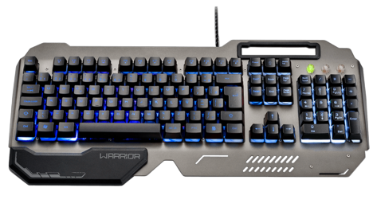

TECLADO GAMER WARRIOR
LED Base Metal
ABNT2
O Teclado Gamer Warrior Ragnar Superfície Metal, LED - TC222 pode ser o seu melhor aliado para as batalhas. Ele é composto por uma placa de metal que garanta maior resistência, além de apoio para o pulso, garantindo mais comodidade durante os seus jogos. Conta com iluminação de LED para backlight nas cores azul, vermelho e roxo e cabo usb 2.0 com cobre puro para garantir estabilidade. Design agressivo e qualidade diferenciada, este é o teclado gamer Ragnar.
R$ 65,00 ADICIONAR AO CARRINHO
